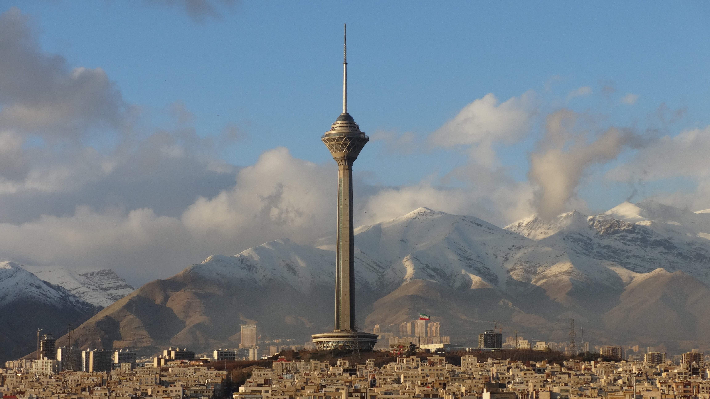
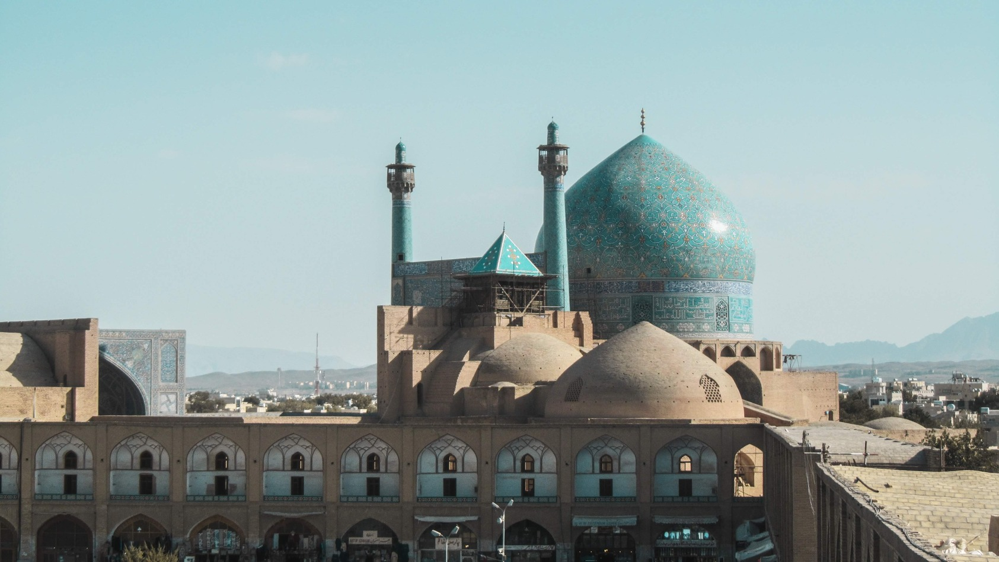
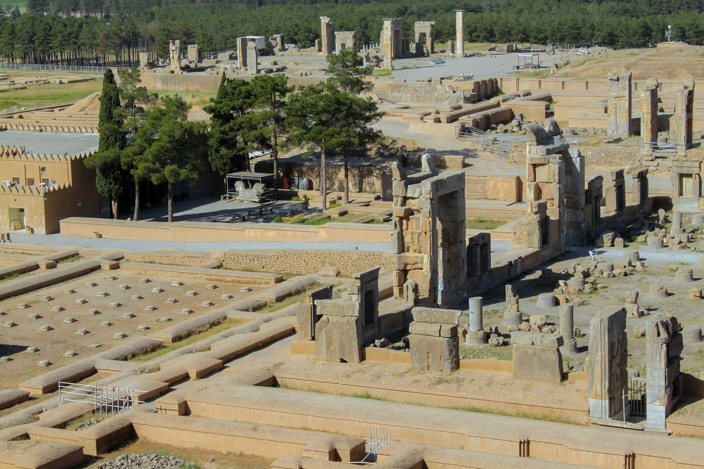
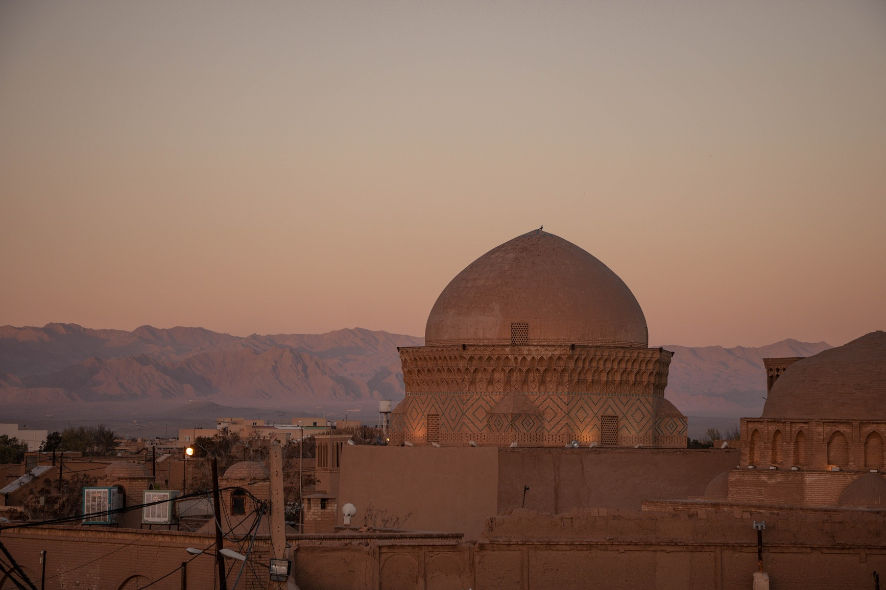

Introduction
Nestled in the heart of the Middle East, Iran beckons intrepid travelers with its rich history, diverse landscapes, and captivating culture. Embarking on a journey through this ancient land is akin to stepping into a realm where millennia-old traditions blend seamlessly with modern innovations. From the bustling bazaars of Tehran to the tranquil oases of the desert, Iran offers a kaleidoscope of experiences that leave an indelible mark on every traveler's soul.
Tehran: A Glimpse of Modern Persia
The adventure begins at the foot of the towering Alborz Mountains, Tehran stands as a vibrant metropolis that beautifully juxtaposes the ancient heritage of Persia with the fast-paced rhythms of modern life. As the capital city of Iran, Tehran serves as a mesmerizing gateway to the country's rich history and its dynamic present.
Tehran is a city of contrasts, where traditional Persian architecture coexists harmoniously with futuristic skyscrapers. Amidst the bustling streets and bustling bazaars, you'll find historical gems like the Golestan Palace, a UNESCO World Heritage Site that showcases intricate tilework and lush gardens reminiscent of the opulent Qajar era. Adjacent to this oasis of serenity is the grand bazaar, where centuries-old trading traditions persist, offering a sensory feast of colors, aromas, and sounds.
Yet, Tehran is not just a repository of the past. The city pulses with the energy of a modern global hub. Towering above the urban landscape is the Milad Tower, an architectural marvel that offers panoramic views of the city and its surroundings. Modern art galleries, theaters, and museums dot the city, reflecting Iran's contemporary creative scene.
Tehran, Main City

Tehran's diverse culinary scene is a microcosm of its society. From fragrant kebabs to aromatic saffron-infused dishes, the city's gastronomy tantalizes taste buds and tells tales of its ancient trade routes. While traditional teahouses invite leisurely conversations, modern cafes buzz with discussions among the tech-savvy youth, a testament to the city's evolving identity.
Stepping into Tehran's streets is to embrace its vibrant tapestry of cultures. A stroll through the neighborhoods reveals the warmth of its people, who are known for their hospitality and genuine curiosity about the world. This cosmopolitan outlook is perhaps most evident in Tehran's academic institutions, where students and researchers engage in diverse fields, fostering innovation and intellectual growth.
Tehran, with its captivating blend of history and modernity, offers a glimpse into the heart of Iran. It's a city where echoes of ancient poets resonate alongside the hum of contemporary life—a place where the past and present intertwine to create a truly unique experience that lingers in the memory of all who visit.
Isfahan: The Jewel of Islamic Architecture
Isfahan is a timeless masterpiece that stands as a testament to the zenith of Islamic architectural brilliance. Often referred to as "Half of the World," this city is a living museum, adorned with intricate designs, majestic domes, and mesmerizing tilework that narrates the story of its rich heritage.
Isfahan's most iconic landmark, the Imam Mosque, is a symphony of turquoise and cobalt blue tiles that shimmer under the sunlight. Its colossal dome and intricate minarets reach towards the heavens, while the courtyard's reflective pool amplifies its splendor. Across the historic Naqsh-e Jahan Square lies the Sheikh Lotfollah Mosque, a true marvel with its delicate dome and poetic arabesques that celebrate the sublime.
As you wander through the Grand Bazaar, your senses are enveloped by the aromas of exotic spices and the colorful array of textiles. Amidst this vibrant commerce lies the Chehel Sotoun palace, where the Hall of Mirrors mesmerizes with its intricate mirrorwork, creating an illusion of endless space and reflections.
The Si-o-se Pol and Khaju Bridges gracefully span the Zayandehrud River, showcasing not only architectural prowess but also community spaces where locals gather to socialize. The bridges' arches and pavilions are illuminated at night, casting a magical glow on the water, a reminder of Isfahan's enduring charm.
Isfahan, Isfahan Province

Beyond the architectural marvels, Isfahan's people exude warmth and hospitality. Its vibrant teahouses are sanctuaries of conversation, while the gardens of Hasht Behesht and Fin evoke a sense of tranquility amidst the urban hustle.
Isfahan's legacy extends beyond its borders, influencing Islamic architecture and art across centuries. Its fusion of Persian and Islamic design elements has left an indelible mark on the world's aesthetic vocabulary, inspiring architects, artists, and travelers alike.
Isfahan stands as a shimmering gem, a masterpiece that honors the cultural and artistic achievements of Islamic civilization. Every tile, dome, and arch is a stroke in the grand canvas of human creativity, inviting visitors to immerse themselves in the splendor of a city that truly deserves its title as the "Jewel of Islamic Architecture."
Persepolis: Where Ancient Kings Roamed
Persepolis, the legendary archaeological site nestled in the heart of modern-day Iran, stands as a solemn witness to the grandeur of ancient Persian civilization. Carved into the rocky landscape, this UNESCO World Heritage Site is a testament to the power, artistry, and vision of the Achaemenid kings who once walked its hallowed grounds.
As you step into Persepolis, you're transported back over two millennia to a time when Darius the Great and his successors reigned over a vast empire that stretched from Asia Minor to the Indus River. The monumental staircases, adorned with meticulously detailed bas-reliefs, depict tribute-bearing delegations from the corners of the empire, a symbolic testament to its vastness and diversity.
The grand Gate of All Nations, with its imposing winged bulls and symbolic carvings, welcomed envoys and emissaries from far and wide, echoing the multicultural mosaic that was the Achaemenid Empire. The Apadana Palace, once the centerpiece of Persepolis, featured grand columns that supported intricately carved capitals, illustrating stories of royal ceremonies and cultural exchanges.
Persepolis, Fars Province

The Tachara Palace, with its ornate facade and intricate detailing, whispers tales of opulent feasts and regal gatherings. The Hall of a Hundred Columns, although incomplete, still evokes a sense of awe with its colossal dimensions, revealing the audacious engineering feats of that era.
While time has taken its toll on these majestic structures, the ruins of Persepolis still possess an air of mystery and majesty. The Persian lion sculptures that guard the entrances, the delicate motifs that grace the walls, and the remnants of what was once a thriving city evoke a poignant sense of the past's splendor.
Walking through Persepolis, one can't help but ponder the audacity of human ambition and the ephemerality of empires. This archaeological marvel invites contemplation, inviting visitors to reflect on the fleeting nature of power and the enduring legacy of a civilization that, despite its fall, continues to inspire awe and admiration across cultures and centuries.
Desert Oasis: Yazd and its Mystical Charm
Nestled deep within the arid expanse of Iran's central desert, Yazd emerges as a serene and captivating oasis that enchants travelers with its timeless beauty and mystical allure. As one of the oldest continuously inhabited cities on Earth, Yazd weaves together history, culture, and architectural marvels that have endured for centuries.
Yazd's labyrinthine alleys wind through the city, revealing ornate houses adorned with delicate windcatchers, the iconic architectural feature that harnesses desert breezes to cool interiors. These "badgirs" are not only a testament to ingenious design but also to the city's commitment to preserving its heritage while adapting to its environment.
The Jameh Mosque of Yazd stands as a masterpiece of Persian architecture, its grand portal inviting visitors to explore its intricate tilework, soaring minarets, and tranquil courtyards. At its heart, the Amir Chakhmaq Complex bathes the square in a soft, golden light, creating a spectacle that's as spiritual as it is visually stunning.
The Zoroastrian fire temple, where an eternal flame has burned for over a millennium, pays homage to the city's religious diversity and historical significance. The Towers of Silence, perched on the outskirts, evoke a quiet reverence, reminding us of the ancient Zoroastrian burial rituals that once took place here.
Yazd, Yazd Province

Yazd's vibrant bazaars are a celebration of local craftsmanship and trade, offering everything from exquisite textiles to traditional sweets. The city's culinary delights, like the delectable baghlava and the refreshing "ab havij," a carrot-based dessert, offer a taste of its rich culinary heritage.
Beyond its tangible treasures, Yazd carries an intangible sense of enchantment. It's a place where starlit nights stretch over the desert, where ancient tales whisper through the wind, and where the dappled sunlight paints a mesmerizing tapestry across the city's beige landscape.
As you wander through its narrow streets, you'll encounter friendly faces and warm hospitality, a reflection of Yazd's close-knit community. Whether seeking refuge from the desert heat or immersing in the city's cultural treasures, visitors leave with a deep appreciation for Yazd's ability to transcend time—a desert oasis that captures hearts with its mystical charm, connecting past, present, and future in an everlasting dance.
Culinary Delights: A Feast for the Senses
From sizzling street food stalls to elegant dining establishments, the world of cuisine is a tantalizing journey that ignites our senses and celebrates the art of flavor. Culinary delights are more than just sustenance; they are a cultural tapestry woven with tradition, innovation, and the shared human experience of savoring life's pleasures
The aroma of freshly baked bread wafting from a local bakery, the sizzle of a pan as ingredients dance in hot oil, the symphony of clinking glasses and cheerful conversations in a bustling restaurant—these sensory experiences intertwine to create the rich fabric of our culinary encounters.
Each region of the world has its own gastronomic identity, a reflection of its geography, history, and the people who call it home. From the fiery curries of India to the delicate sushi of Japan, from the hearty pasta dishes of Italy to the intricate mezze spreads of the Middle East, these cuisines offer a glimpse into the soul of a culture.
Culinary innovation continues to push the boundaries of what we think is possible. Chefs experiment with ingredients, techniques, and presentations, resulting in dishes that are not only delicious but also visually stunning works of art. The rise of fusion cuisine brings together the unexpected, creating harmonious marriages of flavors from different corners of the globe.
Food Shop, Kashan

However, culinary delights are not just about the fancy or exotic. Comfort foods—those dishes that evoke nostalgia and warmth—are equally powerful in their ability to connect us to our roots and provide solace in times of need. Whether it's a bowl of homemade soup on a rainy day or a slice of pie that reminds us of our grandmother's kitchen, these simple pleasures have a profound impact on our well-being.
Sharing a meal is a universal language that transcends borders. It brings people together, fostering bonds and creating memories. Whether it's a family dinner, a romantic date, or a festive celebration, the act of breaking bread becomes a vessel for connection and a way to communicate without words.
In our fast-paced world, taking the time to appreciate culinary delights is an act of mindfulness. It's about savoring each bite, acknowledging the effort that goes into its creation, and recognizing the interconnectedness of food and culture. From the bustling markets to the quiet corners of a favorite café, the world of cuisine invites us to embark on a sensory journey—a feast for the senses that nourishes not only our bodies but also our spirits.
Conclusion
In a world brimming with wonders, from the ancient elegance of Persepolis to the mystical charm of Yazd's desert oasis, and from the architectural marvels of Isfahan to the vibrant tapestry of Tehran's modern Persia, we find ourselves on a journey of exploration and discovery. As we traverse these rich landscapes, our senses awaken to the culinary delights that bind cultures together—a universal language of flavor, aroma, and connection. From the past to the present, from architecture to cuisine, these stories remind us that our world is a kaleidoscope of experiences, each fragment offering a glimpse into the diverse beauty that defines our shared humanity.